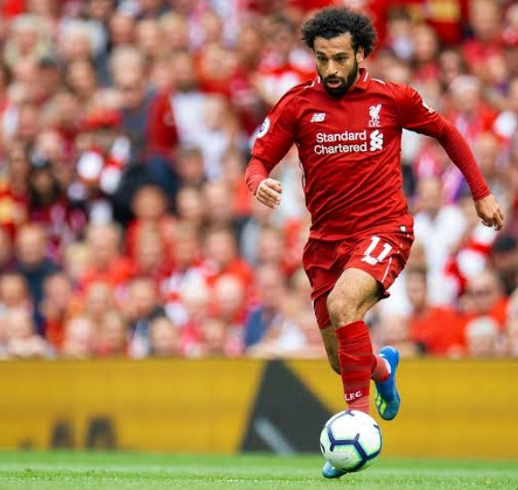
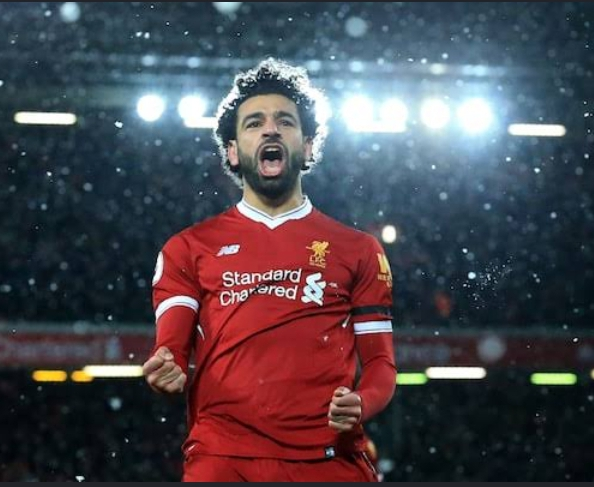

My Journey - From a Fan and a Gamer to a Businessman
My journey started very small.
I started supporting Liverpool in 2018 when I watched Mohamed Salah play. I was just 10 or 11 years old. I saw how Salah came from Egypt, from nothing, and became one of the best in the world at Liverpool. His story inspired me. I started watching all Liverpool matches, I started crying when we lose, shouting when we win. My family thought I was too serious, but for me, Liverpool was teaching me about never giving up. You know our slogan - You'll Never Walk Alone. That slogan entered my heart.


In 2021, my cousin introduced me to Free Fire. At first I was just playing for fun, to pass time. But later I discovered I was good at it. I started playing ranked, I got to Heroic, I started leading my friends. Free Fire taught me that you can be alone but you need a team to survive. It taught me that you must have a plan before you enter the battle.


For a long time, these two things were just hobbies. Football was just for shouting, Free Fire was just for fun.
But last year, I started thinking differently. I saw how one man in my area opened a viewing centre and is now building his house from it. I saw how one guy on TikTok is making millions just streaming Free Fire. I said to myself, why can't I do the same? Why can't I turn what I love into what feeds me?
That is when my mindset changed. I stopped seeing myself as just a fan or just a gamer. I started seeing myself as a future businessman. I started learning how to edit videos, how to talk about business, how to plan.
Today, I am still a student, but I am already planning. My journey is not finished, it is just starting. From a small boy shouting at TV for Liverpool, and pressing phone for Free Fire, to a man who wants to build a business empire from those same passions. That is my journey.